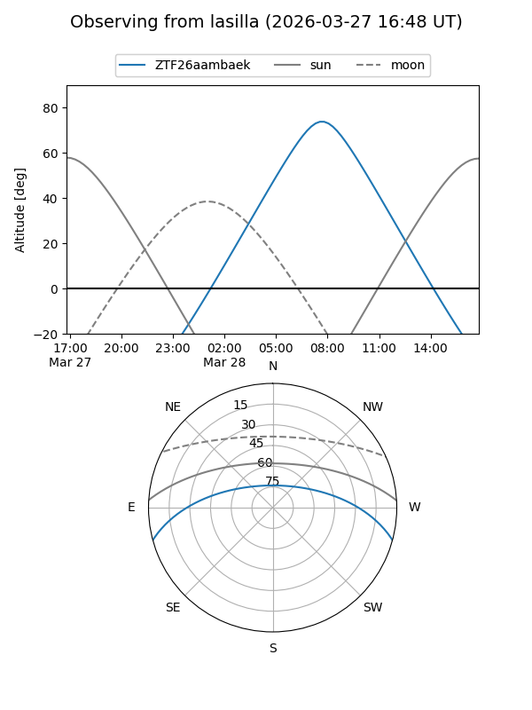
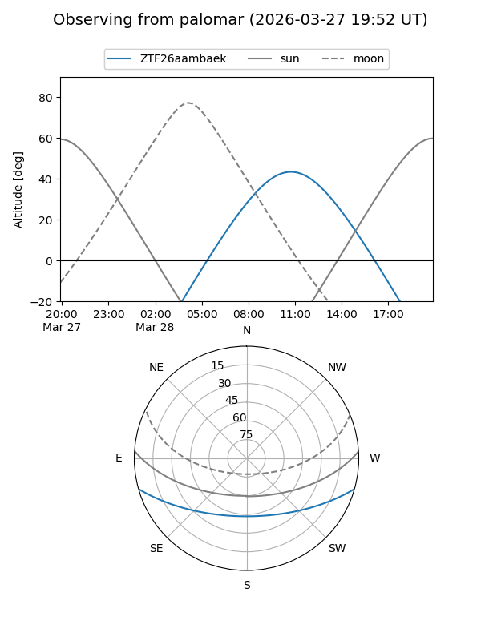

ZTF26aambaek
Target ZTF26aambaek at 2026-03-27 13:45
Aliases and brokers:
FINK: link
Lasair: link
ALeRCE: link
alt names
ZTF26aambaek (ztf,fink_ztf)
Coordinates:
equatorial (ra, dec) = 229.7333,-13.07761
equatorial (HMS+DMS) = 15:18:56.00,-13:04:39.40
galactic (l, b) = (349.3277,+36.17923)
Flags:
Photometry:
last ztfg=16.81
1 ztfg detections
Lightcurve
Visibility


Additional plots